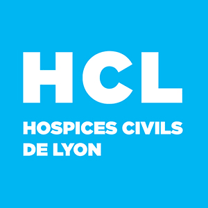
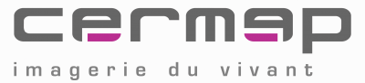
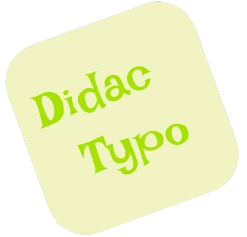

Mon Profil
Bonjour, je suis un étudiant passionné par l'analyse de données. Identifier les besoins d'un client et lui proposer une solution adaptée, voire meilleure, est le type de défi que j'apprécie particulièrement. L'informatique est un domaine en constante évolution. Ce qui est considéré comme la technologie de demain peut rapidement devenir celle d'hier. Et c'est précisément ce mouvement perpétuel qui le rend si fascinant. En informatique, l'ennui n'a pas sa place. L'intelligence artificielle, en particulier, transforme notre monde à grande vitesse. J'ai hâte d'en suivre les évolutions, et si possible, d'y contribuer.
Ma Formation
Mon parcours professionnel
Stage développement full-stack

Modernisation du site web intranet, afin d'implémenter une architecture MVC, puis implémentation de tableaux de bords décisionnels
Voir PlusStage développement front-end

Modernisation du site web intranet, afin d'implémenter une architecture MVC, puis implémentation de tableaux de bords décisionnels
Voir PlusStage développement back-end
La mission de stage était de créer une API RESTful avec fastapi, pour interagir avec la base de données de l'intranet.
Voir PlusMes Projets
Immo
Réalisation d'un tableau de bord avec PowerBi en modélisant les données en modélisation décisionnelle étoile avec un ETL en Apache Hop
Voir PlusFeedwatch
Développent d'une application web, permetant la gestion des flux RSS. Travail avec toute la classe dans plusieurs équipes.
Voir PlusHandistat
Projet web permettant aux personnes en situation de handicap de recenser leur situation afin de contribuer à l’amélioration des statistiques nationales sur le handicap en France. Le projet intègre également un forum visant à favoriser les échanges entre les utilisateurs et à lutter contre l’isolement social auquel certaines personnes en situation de handicap peuvent être confrontées.
Voir PlusDidactypo

Le but de ce site web est d'apprendre aux élèves de primaire à taper au clavier avec dix doigts.
Voir PlusAérogestion
Ce projet consiste en la gestion de l'espace aérien en France. Il s'agit de déterminer à quelle altitude chaque avion doit voler afin d'éviter toute collision. Cela est réalisé à l'aide d'algorithmes de coloration de graphes.
Voir Plus